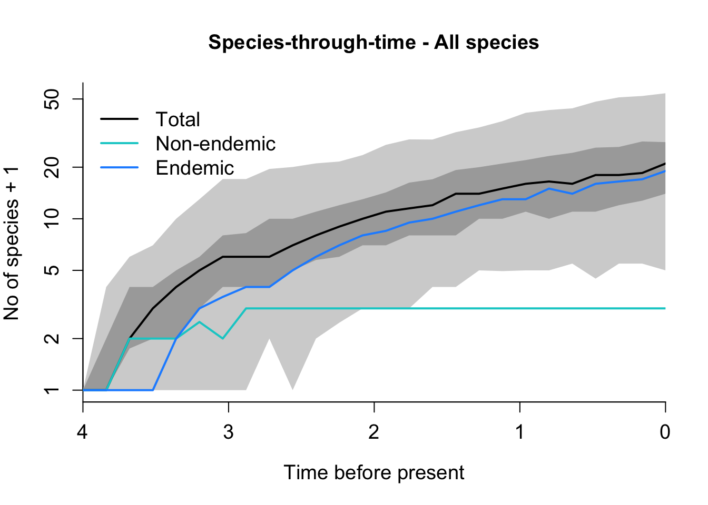
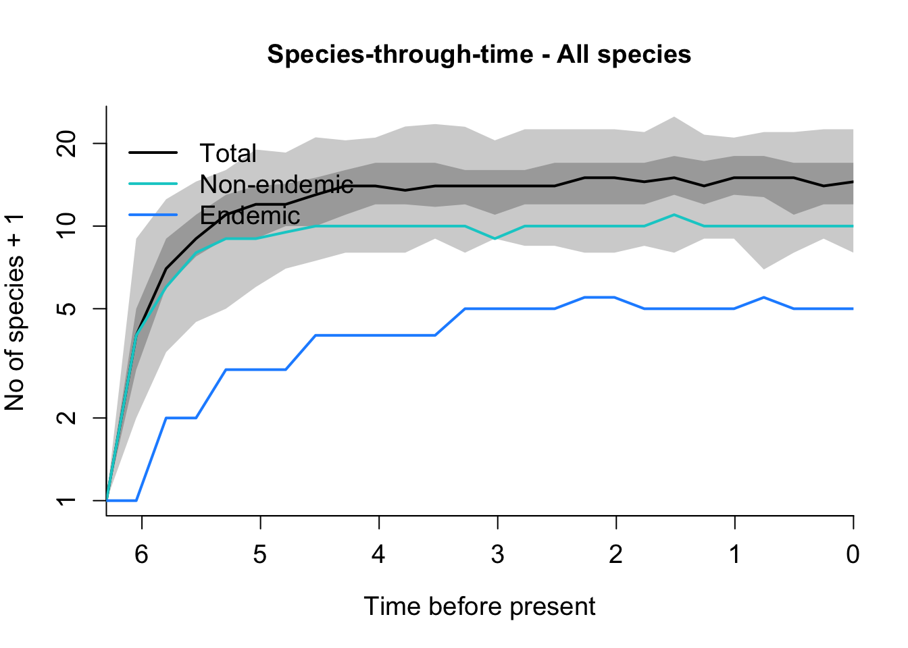

rm(list = ls())6 DAISIE
6.1 Fitting DAISIE models using the Galápagos birds as example
In this part of the practical, we will learn how to use DAISIE. As a demonstraction, we are going to fit the DAISIE model to phylogenetic data for species of native land birds of the Galápagos islands (data from Valente, Phillimore and Etienne 2015 Ecology Letters; and Valente et al 2020 Nature). We will use software DAISIE to estimate rates of speciation, colonisation and extinction in the Galápagos. We will simulate islands with these estimated rates to see how species diversity has varied through time in the Galápagos.
6.1.1 Prepare the R environment
Empty workspace of existing previous objects, just in case.
6.1.2 Load the required packages:
library(DAISIE)
library(ape)6.1.3 Load and visualise Galapágos bird data
The dataset of Galápagos birds includes colonisation and branching times for a total of 27 species of terrestrial birds of the Galápagos islands, distributed across 8 lineages. Some of the lineages have only 1 species, e.g. the Galápagos dove Zenaida. Others have radiated, including the Darwin’s finch radiation (16 species) and the mockingbirds Mimus radiation (4 species). Note: the dataset we will use is slightly different from the example dataset that is included as data in the DAISIE R package.
6.1.3.1 Load Galápagos DAISIE datalist
Download the Galápagos dataset file: galapagos_datalist.Rdata
Store it locally.
Load it into R, by setting the path to the location of the file on your computer:
load(file = "PATH_TO_YOUR_DATALIST_FILE")6.1.3.2 View Galápagos datalist
Just type:
galapagos_datalistThis datalist is of the same format that DAISIEprep produces (e.g., same format as the data_list object that you just produced in the DAISIEprep tutorial).
View your Galápagos datalist by scrolling up and down in R. Or use function View()
View(galapagos_datalist)You can find detailed information using the R documentation file:
? Galapagos_datalist To view the top of the list
galapagos_datalist[[1]]
#> $island_age
#> [1] 4
#>
#> $not_present
#> [1] 992This element contains the island age as well as all the mainland species that do not have extant descendants on the island. These are important pieces of information for DAISIE.
To view just the Mimus colonisation:
galapagos_datalist[[4]]
#> $colonist_name
#> [1] "Mimus"
#>
#> $branching_times
#> [1] 4.00000 3.99999 3.68000 2.93000 0.29000
#>
#> $stac
#> [1] 6
#>
#> $missing_species
#> [1] 0
#>
#> $type1or2
#> [1] 1The first element of the $branching_times item is the island age, followed by the colonisation time and the branching times (if any). The $stac item is a code that tells DAISIE whether the lineage is endemic, non-endemic, and whether or not a precise age or a maximum-age should be used.
Or to view just the Darwin’s finches lineage:
galapagos_datalist[[3]]
#> $colonist_name
#> [1] "Finches"
#>
#> $branching_times
#> [1] 4.0000 3.0280 1.3227 0.8223 0.4286 0.3462 0.2450 0.1180 0.0808 0.0756
#> [11] 0.0527 0.0525 0.0327 0.0322 0.0221 0.0118
#>
#> $stac
#> [1] 2
#>
#> $missing_species
#> [1] 1
#>
#> $type1or2
#> [1] 1As you can see, there is 1 missing species in the Darwin’s finch lineage - this species was not sampled in the phylogeny, so does not have a corresponding branching time in the $branching_times item. However, $missing_species item tells DAISIE that it needs to consider one extra species in its computations.
6.1.3.3 Visualise Galápagos data
You can visualize the data in a different way using:
DAISIE_plot_island(galapagos_datalist)The above plot shows the 8 colonisation events (independent lineages), the time of colonisation, number of species sampled in each lineage (n), number of missing species (m) and the times of cladogenetic speciation events (horizontal lines). The dashed horizontal line is the island age. Unfilled symbols indicate that the time of colonisation was set as “max-age” (not precise), that is, the colonisation time could have happened any time between the time plotted and the present. This applies for instance to lineages with stem ages older than the island age, whose age is then set to be the age of the island (as was the cases of genus Mimus, whose stem age is older than the island age of 4 million years).
6.1.3.4 Plot age versus diversity
To visualise the diversity of each lineage according to their age:
DAISIE_plot_age_diversity(galapagos_datalist)The above plot shows the number of species per lineage plotted against their colonisation time. You can see that one lineage stands out, it is not the oldest lineage, but it has 16 species, many more than the other lineages (there is no label, but it corresponds to the Darwin’s finches). One of the lineages, Mimus, is not plotted, because it’s age is set as max-age, that is why the number of species is 23 (27-4 species=23).
6.1.4 Fitting DAISIE models
We will now fit three different DAISIE models using maximum likelihood, using the function DAISIE_ML. The DAISIE function searches for the parameters that maximise the likelihood of the data given the specified model. We will then compare the likelihoods of the 3 different models to see which one is preferred
We will fit the 3 different DAISIE models to the phylogenetic data contained in the object galapagos_datalist.
6.1.4.1 Fit a full DAISIE model (M1)
The first model (M1) we will fit is a full DAISIE model with 5 parameters. The parameters in DAISIE are always placed in this order:
- Cladogenesis rate (lambda_c) (unit: cladogenesis events per island lineage per time unit)
- Extinction rate (mu) (unit: extinction events per island lineage per time unit)
- Carrying capacity (K) (unit: number of species)
- Colonisation rate (gamma) (unit: colonisation events per mainland lineage per time unit)
- Anagenesis rate (lambda_a) (unit: anagenesis events per island lineage per time unit)
Important settings of the DAISIE_ML function:
initparsoptrefers to the starting parameters of the maximum likelihood optimisation (the search for the optimal parameters). 1.5 is the starting cladogenesis rate, 1.1 is the starting extinction rate, 20 is the initial carrying capacity (20 species), 0.009 is the colonisation rate; 1.1 is the initial anagenesis rate.idparsoptshows the parameters to optimise, in this case all 5, so 1:5parsfixandidparsfixare set to NULL because we are not fixing any parameters this time.
The code below takes a while to run.
M1_results <- DAISIE_ML(
datalist = galapagos_datalist,
initparsopt = c(1.5,1.1,20,0.009,1.1),
ddmodel = 11,
idparsopt = 1:5,
parsfix = NULL,
idparsfix = NULL
)
M1_results
#> lambda_c mu K gamma lambda_a loglik df conv
#> 1 1.258226 1.136924 9968506 0.004957378 1.251793e-06 -84.78145 5 0The output gives the ML parameters values, the loglikelihood, and the number of parameters (df).
6.1.4.2 Fit model with no carrying-capacity (M2)
As you can see above, the value of K in M1 is very high (hundreds of thousands of species). This suggest that there may be no upper bound to diversity (so K is in fact infinite). So let’s try a model without K as a free parameter.
The second model (M2) is just like M1, but we will fix K to be infinite. In comparison to M1, we now remove the 3rd parameter (carrying capacity) from the initparsopt and idparsopt settings. So we now have only parameters 1,2,4 and 5. We fix the parameter number 3 to Inf (carrying capacity K fixed to infinite):
M2_results <- DAISIE_ML(
datalist = galapagos_datalist,
initparsopt = c(1.5,1.1,0.009,1.1),
idparsopt = c(1,2,4,5),
parsfix = Inf,
idparsfix = 3,
ddmodel = 0
)
M2_results
#> lambda_c mu K gamma lambda_a loglik df conv
#> 1 1.264389 1.149378 Inf 0.00505558 1.662578e-05 -84.78088 4 0
6.1.4.3 Fit model with no carrying capacity AND no anagenesis (M3)
Now, it appears that the parameter of anagenesis is close to 0 in M2 (see above). Perhaps a model without anagenesis will perform well.
The third model (M3) is like M2, but with no carrying-capacity and no anagenesis. This time we switch off the 3rd and 5th parameters (carrying-capacity and anagenesis). We fix the 3rd parameter (K) to infinite; and the 5th parameter (anagenesis) to zero:
M3_results <- DAISIE_ML(
datalist = galapagos_datalist,
initparsopt = c(1.5,1.1,0.009),
idparsopt = c(1,2,4),
parsfix = c(Inf,0),
idparsfix = c(3,5),
ddmodel = 0
)
M3_results
#> lambda_c mu K gamma lambda_a loglik df conv
#> 1 1.263034 1.146225 Inf 0.005040353 0 -84.78082 3 0
6.1.4.4 Select the best model using AIC
Now compare the log-likelihoods of the 3 models. They all have similar likelihoods, but one has fewer parameters, so it is preferred. Which model is it?
A more proper way to compare the models is using AIC (or other information criteria), which takes into account the number of parameters and the loglikelihood.
Create new function to compute AIC values base on the likelihood values and number of parameters for each model.
AIC_compare <- function(LogLik,k){
aic <- (2 * k) - (2 * LogLik)
return(aic)
}Fill in the values from your data in this format:
AIC_compare(c(likelihood_M1,likelihood_M2,likelihood_M3), c(n_parameters_M1,n_parameters_M2,n_parameters_M3)).
AICs <- AIC_compare(LogLik = c(M1_results$loglik,M2_results$loglik,M3_results$loglik),
k = c(M1_results$df,M2_results$df,M3_results$df))
names(AICs) <- c('M1','M2','M3')
AICs
#> M1 M2 M3
#> 179.5629 177.5618 175.5616The model with the lowest AIC value is the preferred model. (In this case, M3)
6.1.5 Simulate islands
Now let’s use the ML parameters we estimated from the Galápagos bird data to simulate islands. Choose the parameters of the best model. We will simulate for 4 million years (time = 4). M is the mainland pool (keep it at 1000).
6.1.5.1 Simulate islands with the parameters estimated from the best model for the Galápagos bird data (takes a while to run, you can reduce number of replicates if you want)
Galapagos_sims <- DAISIE_sim(
time = 4,
M = 1000,
pars = c(1.26, 1.146, Inf, 0.005,0),
replicates = 100,
plot_sims = FALSE)6.1.5.2 Plot the species-through-time plots resulting from the simulations
DAISIE_plot_sims(Galapagos_sims)
6.1.5.3 Play with different simulations settings
Play with different parameter settings in DAISIE_sim (e.g. changing extinction rate, colonisation rate, island age, mainland pool size, replicates). Is equilibrium reached?
6.1.5.4 Comparison with bird data from the Azores islands
Now let’s briefly compare with simulations for a completely different dataset, of birds from the Azores archipelago (Atlantic Ocean). Load datatable containing Azores bird data from Valente et al 2017 (Current Biology)
data(Macaronesia_datalist)
Azores <- Macaronesia_datalist[[1]]6.1.5.4.1 Visualise Azores data
DAISIE_plot_island(Azores)Three of the species are extinct and only known from fossils.
6.1.5.4.2 Simulate Azores with pre-identified ML parameters
Azores_sims <- DAISIE_sim(
time = 6.3,
M = 300,
pars = c(0,1.053151832,Inf,0.052148979,0.512939011),
replicates = 100,
plot_sims = FALSE)
6.1.5.4.3 Plot the species-through-time plot for the Azores from the resulting from the simulations
DAISIE_plot_sims(Azores_sims)
How does the Azores plot differ from that of the Galápagos?
The end of the DAISIE practical. Well done! Now you are ready to work on the Insula exercise